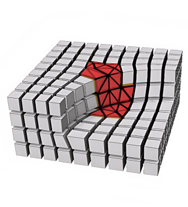

<div id="slide_meshTypes_mixte">
	Types de Maillages
	<hr style="width: 70%; display:flex; justify-content:space-evenly;">

	<div class="r-hstack">
		<div class="r-frame">
			
			<p style="font-size:18px; margin-top: -25px;">Hex-dominant<br>[Ray et al. 2017]</p>
		</div>
		<div class="r-frame" style="text-align: left;">
			<p style="font-size: 25px;">Maillage Hex-dominant :</p>
			<ul style="font-size: 22px;">
				<li style="padding-top: 0px;">Tétraèdre, prismes et hexaèdres</li>
				<li style="padding-top: 10px;">Compromis entre tétrahédrique et hexaédrique</li>
				<li style="padding-top: 10px;">Simple à automatiser</li>
				<li style="padding-top: 30px;">Transitions coûteuses en calculs</li>
			</ul>
		</div>
	</div>
	<aside class="notes">

	</aside>
</div>